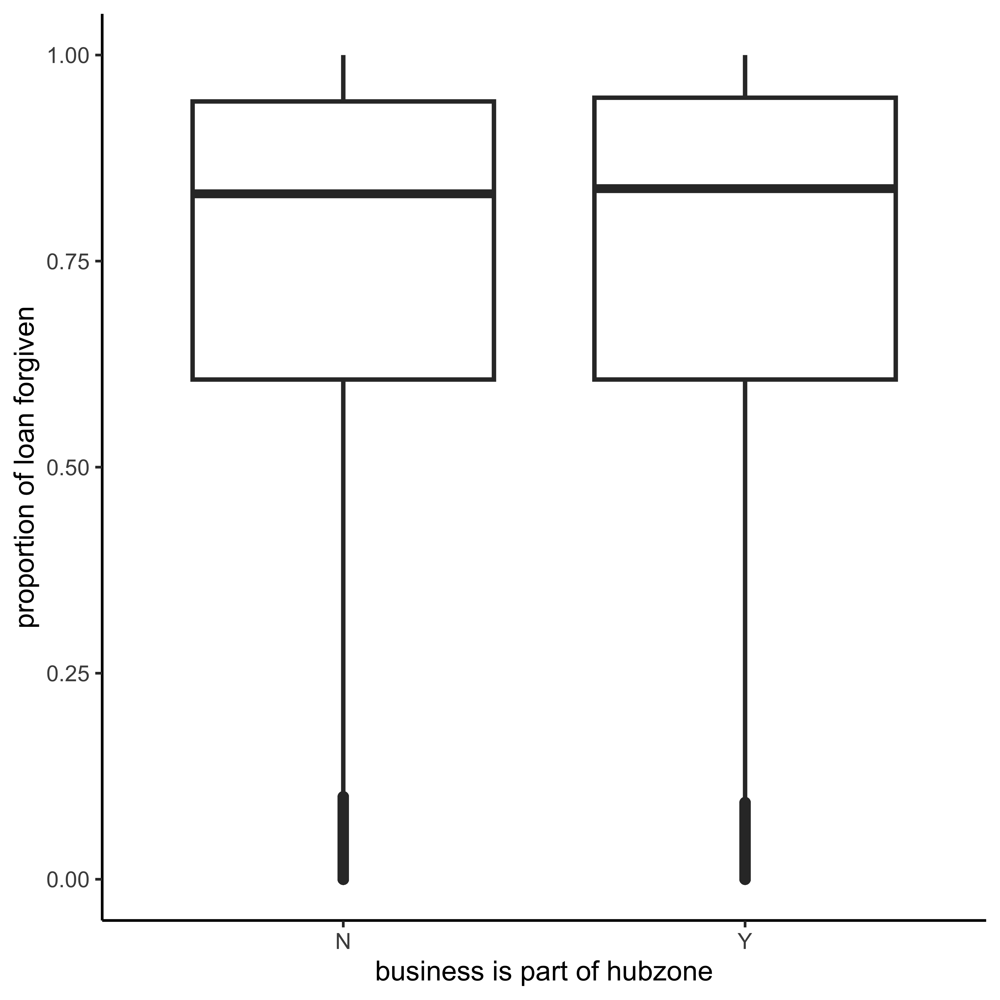

Paycheck Protection Program: Looking at PPP Loan disbursement using public dataset released by the Small Business Administration
Author
Ana Collado
Abstract
With a P value at 0.16 at the alpha level of 0.05– I am 95% confident that the businesses who are part of a HubZone have an average difference in the proportion forgiven of their PPP Loan between -0.0044 and 0.000731. The interval includes zero, suggesting there is not a significant difference in proportion of loan forgiven. We fail to reject the null hypothesis.
Introduction
In the aftermath of COVID, businesses in need of help applied for SBA backed loans under the Paycheck Protection Program. 1 The loans were intended to be forgiven if the business met specific criteria.2 The Small Business Administration, with the assistance of The Office of Inspector General, released a report in 2023 informing the public of $200 billion dollars disbursed to fraudulent claims.3
The SBA released a public list of all business entities that applied and received PPP loan funds. The dataset is a robust list of business of varying sizes, ages, and sectors across the United States (with over 10 million data points). In Part A of this exploration we establish that the data alludes to, at the very least, lax expectations and soft requirements for SBA backing, which suggests the original hypothesis that the SBA’s handling of things made it more convenient to commit fraud.
Statistical exploration could suggest that approval requirements were less rigid were due to business’ indicator status such as “HubZone” (answered Yes or No” for businesses in locations that experience economic hardship) and Low to Medium Income (LMI).
How much more loans (in value)were approved for businesses marked “Yes” in Hubzone category?
Is there a significant difference in average loan forgiveness proportion for Hubzone Businesses?
# A tibble: 2 × 2
HubzoneIndicator mean_prop
<chr> <dbl>
1 N 0.744
2 Y 0.745
Visualizations
Examining a Box Plot
stats_df %>%ggplot(aes(x= HubzoneIndicator, y = ProportionForgiven))+geom_boxplot(outlier.size =7,na.rm =TRUE, linewidth =3)+xlab("business is part of hubzone")+ylab("proportion of loan forgiven")+theme_classic(base_size =40)

The boxplots seem nearly identical even down to the length of the whiskers. Their differences are very slight, the median (middle line in box) for businesses in a Hubzone is slightly higher. The bottom whiskers are not the same length– the bottom makes up like half of the plot. Lets take the data onto a density plot for alternative inspection.
The density line for N (not in Hubzone) is barely visible as the densities mimic each other very closely. BUT the point of the Hubzone Program is to prioritize businesses in areas facing economic challenges…I’m inclined to say there is not a significant differences but because we are working with such a large dataset and tiny differences might be significant, we’re going to go with the hypothesis that there is a significant difference in proportion of loan forgiveness depending on Hubzone.
Observation Differences
obs_diff <- stats_df %>%drop_na(HubzoneIndicator) %>%specify(ProportionForgiven ~ HubzoneIndicator) %>%calculate(stat ="diff in means", order =c("Y", "N"))
null_dist <- stats_df %>%drop_na(HubzoneIndicator) %>%specify(ProportionForgiven ~ HubzoneIndicator) %>%hypothesize(null ="independence") %>%generate(reps =1000, type ="permute") %>%calculate(stat ="diff in means", order =c("Y", "N"))
Calculate P-Value for Hypothesis Test
null_dist %>%get_p_value(obs_stat = obs_diff, direction ="two_sided")
# A tibble: 1 × 1
p_value
<dbl>
1 0.17
ci_forgiveness<- stats_df %>%drop_na(ProportionForgiven, HubzoneIndicator) %>%specify(ProportionForgiven ~ HubzoneIndicator) %>%generate(reps =1000, type ="bootstrap") %>%calculate(stat ="diff in means") %>%get_ci(level =0.95) %>%print()
The P value is 0.16 at the alpha level of 0.05. I am 95% confident that the businesses who are part of a HubZone have a difference in the proportion forgiven of their PPP Loan of about -0.0044 and 0.000731. The interval does include zero, so its not a significant difference. So, we fail to reject the null hypothesis.
Conclusion
Although we found there is no significant difference in average PPP Loan forgiveness proportion between Hubzone and non Hubzone businesses, it seems like a separate issue might need some investigation. The Hubzone program is meant for businesses that need the extra push, so they are a preffrered choice in government contracts.
Disclosures & Limitations
The Data
In the data, loans were disbursed to many claims that did not fill the forms completely. I examined this entire situation in my DATA607 project. Many items were self reported with little fact check. Business loans were approved by lenders and forgiven by the SBA in what seems like a haphazard manner.
There might be identifying data that was excluded from the SBA’s release such as liscense numbers, EIN numbers, and Social Security numbers. But in that case, I wonder why so many business addresses and names were missing? Additionally there are observations exempt whose information is protected by law( whose verbiage by the way is incredibly broad).
The Work
This project is not finished as it takes took longer than I had imagined to examine 11 million data points. However, in retrospect, because of the magnitude of observations, the hypothesis would have better fit as a normal distribution had I taken a random sample of the data. It is certainly too late now but its something I did not think of at the time.
.png)